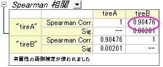
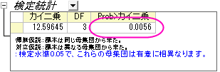
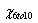
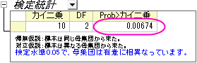

|
|
|
ノンパラメトリック検定はデータが正規分布するかわからない時や、正規分布に従わないと確認済みであるときに使用されます。
このチュートリアルでは、以下の項目について説明します。
ノンパラメトリック検定は、正規性の仮定を必要としません。一般に、次のような状況で使用されます。
| ノンパラメトリック | パラメトリック | ||
|---|---|---|---|
| 全ての分布からのデータ | 正規分布からのデータ | ||
| 小さい集団 | 大きい集団 | ||
| 1群 | Wilcoxonの符号順位検定 | 1群のt検定 | |
| 2群 | 独立した群 |
|
2群のt検定 |
| 対応のある群 |
|
対応のあるt検定 | |
| 複数群 | 独立した群 |
|
一元配置ANOVA |
| 関連した群 | FriedmanのANOVA | 繰り返し測定のある一元配置ANOVA |
1群のWilcoxon の符号順位検定は、特定の値に対して母集団の中央値が適切か否かを検定します。片側または両端の検定から選ぶことができます。Wilcoxon の符号順位検定の仮定は、「H0：中央値は仮定した中央値と等しい」に対して「H1：中央値は仮定した中央値と等しくない」になります。
この例では、製造店勤務の品質管理技術者が製品の重さの中央値（または、平均）が166と等しくなるか調べます。技術者は10個の製品をランダムに取り出し、重さを測りました。測定データは次のようになりました。
151.5 152.4 153.2 156.3 179.1 180.2 160.5 180.8 149.2 188.0
技術者は正規性検定このデータの分布が正規分布か否かを判断します。
結果によると、P値＝0.03814となっており、このデータは0.05レベルでは正規分布ではない、という事ができます。1群のWilcoxon符号付順位検定を実行するには
結果によると、帰無仮説を0.05レベルで棄却できないので、結果として中央値は166と等しいといえます。
Originは集団が独立システムとなっている時に使用できるノンパラメトリック統計検定として、マンホイットニー検定と2群のKolmogorov-Smirnov検定の2つを用意しています。
次の例題はマンホイットニー検定の実用的な例を示します。2種類のタイヤ（AとB）ですり減り具合（mg）の量を測定し、各タイヤに8つの実験が行われました。このデータはインデックス化され、abrasion_indexed.dat ファイルに保存されています。
相関係数は2つの変数間の関係性を見るのに使用されます。ノンパラメトリック統計でも、相関係数を計算することが可能です。
Originは相関係数を計算する2種類のノンパラメトリック手法を搭載しています。
次のサンプルは、ノンパラメトリック状況の相関係数を計算する方法を示します。
Spearman相関の値から、AタイヤとBタイヤのすり減り具合には相関があるといえます。

上記例で使用した、タイヤAとタイヤBの中央値を使用します。
最終的に2つの中央値は有意に異なる、と結論付ける事ができます。一見して分かりますが、グループAの中央値の方がグループBより大きくなっています。
この例題では4種類の車の燃費が測定されました。各車に対して複数の実験が行われました。結果は以下の表にまとめられています。
| GMC/mpg | Infinity/mpg | Saab/mpg | Kia/mpg |
|---|---|---|---|
| 26.1 | 32.2 | 24.5 | 28.4 |
| 28.4 | 34.3 | 23.5 | 34.2 |
| 24.3 | 29.5 | 26.4 | 29.5 |
| 26.2 | 35.6 | 27.1 | 32.2 |
| 27.8 | 32.5 | 29.9 | |
| 30.6 | 30.2 | ||
| 28.1 |
これら4つの製造元で作られた車の燃費の等しさ、あるいは、一番効率的な車かを評価するのに、ノンパラメトリック検定の1つである、Kruskal-Wallis のANOVAを行います。
p値から、これらの4つの製造元の車の燃費は有意に異なるという事ができます。

眼科医がヘリウム・ネオンレーザー治療が子供に有効か調べています。6-10歳の子供たちのと11-16歳の子供たちの2群からのデータがあります。各データセットは5人の裸眼視力が3回の治療を通してどのように変わったのか記録しています。結果はeyesight.datに保存されています。
標本数が少ないのでノンパラメトリック検定を行います。次の手順に沿って操作してください。
のp値は0.0067379となっており、0.05よりも小さい値になっています。この2群は大きく異なる事が分かるので、治療は6-10歳の群には有効であるといえます。

同じように、列B をデータ範囲にして、他の入力設定はステップ3と同じようにします。
結果を確認すると、 のp値は0.02599となっており、0.05や0.10よりも小さくなっていることが分かります。つまり、11-16歳までの子供でも、3回の治療で視力が良くなっていると結論づける事ができます。
のp値は0.02599となっており、0.05や0.10よりも小さくなっていることが分かります。つまり、11-16歳までの子供でも、3回の治療で視力が良くなっていると結論づける事ができます。
また、> という事が分かるので、ヘリウム・ネオンレーザー治療は6-10歳までの子供の方が良く効くといえます。まだ年齢が幼い子供たちがこの治療を行うと、視力が改善する可能性が高くなります。
という事が分かるので、ヘリウム・ネオンレーザー治療は6-10歳までの子供の方が良く効くといえます。まだ年齢が幼い子供たちがこの治療を行うと、視力が改善する可能性が高くなります。